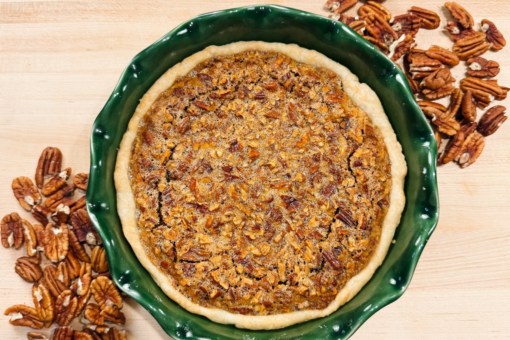
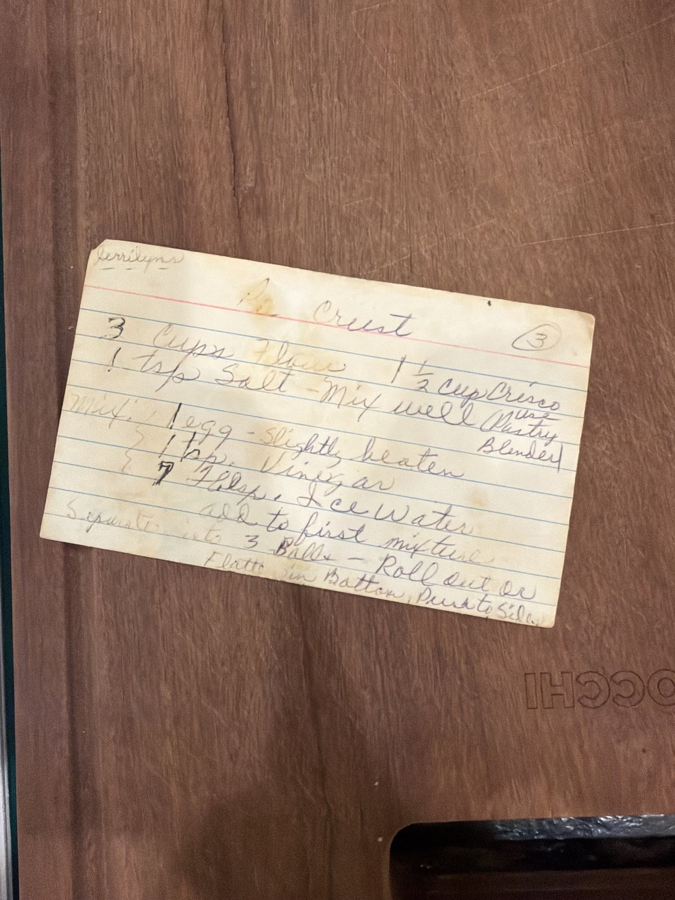
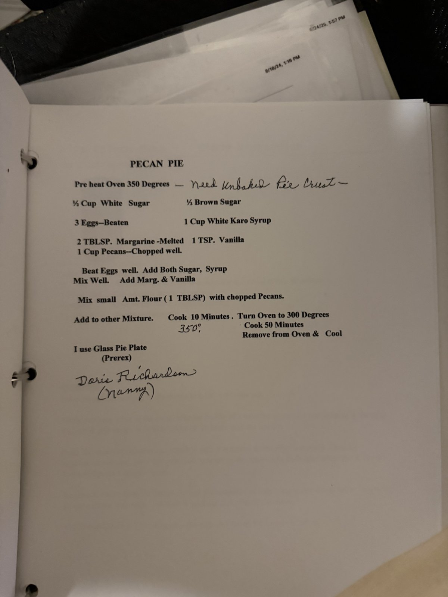

She’s the Goose

Thanksgiving · The Pies
My nanny, Doris Richardson, made this pecan pie, and it’s the one everyone in my family absolutely loves. The crust is my mawmaw’s, written on an index card that’s been through a lot of Thanksgivings.
Mawmaw’s Pie Crust · makes 3 crusts
Nanny’s Pecan Pie · one 9-inch pie
Make the crust. Mix the flour and salt. Cut in the Crisco with a pastry blender and mix well.
Add the liquid. In a separate bowl, mix the egg, vinegar and ice water. Add to the flour mixture.
Shape. Divide into 3 balls. Roll out, or flatten into the bottom of the pie plate and push up the sides.
Heat the oven. Preheat the oven to 350°F.
Mix the filling. Beat the eggs well. Add both sugars and the syrup, and mix well. Add the melted margarine and vanilla.
Add the pecans. Toss the chopped pecans with the flour, then add to the egg mixture.
Bake. Pour into the unbaked crust. Bake 10 minutes at 350°F, then turn the oven down to 300°F and bake 50 minutes more.
Cool. Remove from the oven and cool.
The pie plate. Nanny used a glass Pyrex pie plate.
The crust. Mawmaw’s recipe makes three crusts. This pie uses one.
The cards. Both recipes, just as they were written.

